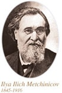

|
乳酸菌的故事（酸奶和菌）有益人类健康生活的乳酸菌自然界里存在着很多细菌（肉眼看不见的微小单细胞生物）。无论是在空气中，还是在海水里，或者是我们的手上和体内，它们都无所不在。有些细菌会产生各种各样的作用。 用于制作酸奶的乳酸菌乳酸菌由糖制作成乳酸的过程称为“乳酸发酵”。乳酸菌是通过乳酸发酵制成酸奶等发酵食品，各种食品选择使用各自的乳酸菌种类。 酸奶里的乳酸菌即使已成死菌依然有效保加利亚乳杆菌、嗜热链球菌等酸奶中的乳酸菌进入人体后，在胃里会受到胃酸、在肠道里会受到胆汁等作用。其结果，乳酸菌有的在抵达肠道前可能已经死亡，有的可能活着抵达肠道。 乳酸菌研究的推广从欧洲传递至亚洲，然后扩大至美国的益生菌、益生元、生物源等用语在生物科学领域受到广泛的关注。 【专栏（1）】乳酸菌的主要种类
分为棒状的“杆菌”（乳杆菌）和球状的“球菌”（乳球菌/明串珠菌/片球菌/链球菌），并可进一步详细分类。
【专栏（2）】肠道细菌
|

腐败菌
在肠道中分解蛋白质，生成氨、硫化氢、胺、吲哚、酚等有害或腐败物质。这些物质都有恶臭，是粪便臭味的原因。另外，它还是致癌物质的原料，起着助长癌细胞生长的作用。引起腹泻和肠炎的细菌也都是腐败菌。
益生菌（Probiotics）
这一用语突然呈现重要意义，始于1969年在英国发表的一篇报告，该报告主张应禁止以提高家畜生产率为目的而在饲料中添加抗生素。
家畜具有固有的肠道内细菌丛，为了预防感染症和提高生产率，保持正常的菌群生态平衡的重要性在当时已经逐渐成为共识。不久，其作为一种抗生素对立面的物质而开始受人关注，1989年由英国微生物学家福勒博士定义为“改善肠道细菌丛的平衡，从而对动物产生有益效果的活菌添加物”；“这里重要的不是物质，而是活的微生物本身”，由此明确了通用于现代的益生菌的定义。这一定义也被称为“在肠道内起有益作用的活细菌”，其中也包括使用益生菌的食品和活菌制剂。
这一定义后来之所以被反复修改，是因为人们认识到，益生菌不仅对于家畜，还认识到其对人类也很重要。最近这一定义的范围进一步扩大，有的已开始将其定义为“对生物有益的活微生物”。体内细菌栖息的不仅仅是肠道，皮肤和口腔以及呼吸道等部位也栖息着很多细菌，如其平衡遭到破坏，将会引发各种感染症。虽然还没有发现预防这些感染症的有效细菌，但是益生菌在该领域的作用为人们所期待。
益生元（Prebiotics）
这是从日本开发的低聚糖得到启发而产生的用语，1995年被定义为“促进肠道内栖息的有益菌的繁殖，提高其活性，对宿主起到有益作用的难消化性食品成分”。
这是源于由肠道内可增加益生菌双叉乳杆菌的物质所派生出来的用语，当初被认为是一种只增加双叉乳杆菌的特殊微量物质。但是不久之后人们发现，不仅仅是双叉乳杆菌，可增加肠内乳酸菌的，还有人类的消化酵素无法消化，可直达肠道，成为乳酸菌饵食的糖类，现在已经开发了难消化性低聚糖的低聚半乳糖、低聚果糖等，除此以外，食物纤维也有类似功效。
生物源（Biogenics）
通过乳酸菌的作用而产生的有效成分，一种不通过肠道细菌丛而直接提高免疫力，强化自然治愈力的功能物质。
这项研究是1988年由光冈知足博士首先提倡，是现在备受关注的主题之一。
狭义上是指“降血压作用、免疫赋活作用、胆固醇降低作用、肠道调理作用和抗肿瘤作用等具有生物调节、生物防御、疾病预防、老化控制等作用的食品成分”，在广义上，生理活性肽、植物性多酚、类胡萝卜素、DHA和维生素等食品成分属于这一类。
梅奇尼科夫的主张
|
推敲一下益生菌和益生元这些用语的定义，就会发现它与100多年前梅奇尼科夫所提倡的内容基本相同。梅奇尼科夫，作为益生菌，很关注保加利亚酸奶和保加利亚乳杆菌，认为为了增加这种有益的乳酸菌成分，需要一定量的乳糖和蔗糖。 |
 |
有关益生菌的综合研究
在欧洲兴起了一股运用最新的生物技术和分子生物学方法重新研究梅奇尼科夫提倡的乳酸菌和免疫及老化预防关系的热潮，目前正以EU为中心开展综合性的研究。
由各国的研究人员和益生菌企业聚集一堂开展的“STARLAB”和“PROBDEMO”项目已告结束，正在计划启动下一个项目。研究项目从被当作益生菌使用的各种乳酸菌基因水平的分析开始着手，将涉及到安全性、有用性等所有领域，其成果备受人们期待。
另一方面，日本在该领域的基础和应用研究也走在世界的前列，还举办国际性的研讨会。